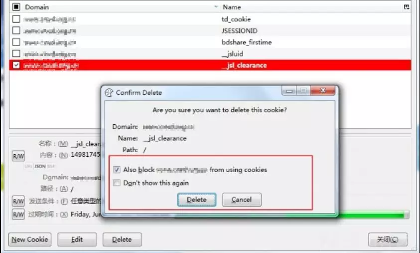

先知安全技术社区独家发文，如需转载，请先联系社区授权；未经授权请勿转载。
前言
码一下半年前的一次过反爬虫的经历，不知道这个反爬虫有没有改进了，主要还是看看思路吧:)
第一关：拿到javascript内容
一开始浏览器看不到反爬虫的js代码。
难点：
一开始打开这个网站，比较难留意到有个状态是521页面的跳转。因为这个页面一小时只出现一次，并且为1500毫秒。
过关技巧：
阻止cookie来获得javascript
具体实现：
删除cookie并阻止

查看源码

第二关：获得真实代码
难点：
将真正的代码隐藏起来，阻止了那些直接一上来就解码的人。
过关技巧：
找到最终输出点为eval
具体实现：
1）美化
使用【http://jsbeautifier.org/】

2）理解代码

可以看到eval是最后一步，说明这里最后是通过eval来拼接并执行程序。所以这里可以把eval改为【console.log】放到F12的console口里看一下结果。

可以看到黄色部分为运行结果，说明是二次混淆了，这个黄色部分才是真实代码。复制出来看。如下：

把头尾的东西去掉，没用的。再美化之后：

第三关：修正代码
难点：
如果你看到上面有个eval就使用第二关的方法，那就错了，这里的eval在代码中间，只是用来拼接用的。而且这里还有个故意留下的坑，就是让程序运行错误，所以这里要好好理解代码，弄懂其逻辑。
过关技巧：
放到IDE里梳理代码。(这里使用ecilpse)
具体实现：
1）代码贴到ecilpse里

使用eclipse搭建一个js的测试页面，随时用浏览器刷新查看结果。
2）理清代码总体逻辑，并去掉不重要代码

如图为整体代码的大逻辑，于是我们可以去掉不重要的代码，留下重要部分，放到eclipse里调试。
代码为：

最后的dc即输出了我们要的结果。
3）输出dc出来
在最后写上一句【console.log(dc);】然后放到F12里：

看，这就是我们得到要的结果。

但是,放在python里，这样流程走下来的结果偶尔会对，偶尔又不行了。为什么呢？还要继续深挖。
第四关：jsfuck
难点：
特殊字符
过关技巧：
细心
具体分析：
cd数组，没错我们要搞cd数组。看起来应该是jsfuck，打CTF经常会遇到。但这里的话要怎么去分解他呢？看到这个地方：

再仔细看看：f.reverse()[[-~[]]](cd[i])其中，reverse()是逆序的意思，可以先去掉，就剩下：f[[-~[]]](cd[i])
这个的形式其实就是f[ ]( )，就是调用上面的f函数的形式，那么最奇怪的点就在这里[ ]里的[-~[]]，它是直接用的！
于是我试着直接看它是值是什么：

它直接就是值为1的数组。那么直接看cd的值试试：

没错是一堆数组。用python看，里面是有几层数组：

为什么会这样呢？js的什么特性导致了？想了半天，想到了很多年前看到的一篇文章【http://www.freebuf.com/sectool/5352.html】：

好了，过了这一关，基本上算是转折点，快接近终点了。
第五关：列表里的列表
难点：
f函数逻辑。
过关技巧：
看懂f函数逻辑，慢慢调试才知每部分的功能。
具体分析：
上一关我们看到数组里面还要数组，那么我们就要看各个数组对应的是什么值。
经过调试，发现最多出现三层数组。我们分别命名为x、y、z层。其中：
x层直接为字符串，只要拼接就行了。
y1层为ascii码。
y2层和z层为对应当前url的第n个字符。这就是为什么上面第三关还不算成功的原因。

再具体看一下z层，下面这个函数可以获得当前的页面的url，所以每个网站都不一样的。所以这一层个人认为是个相当棒的设计。

比如这里访问的是http://localhost/，那么先过滤出来localhost/，然后如果cd里这个z层数组值是4，那么得到的字符是a。所以最终，这个cd数组根据每一层的转换，就能变为：

然后拼接dc就是最终我们要的结果了啦啦啦：